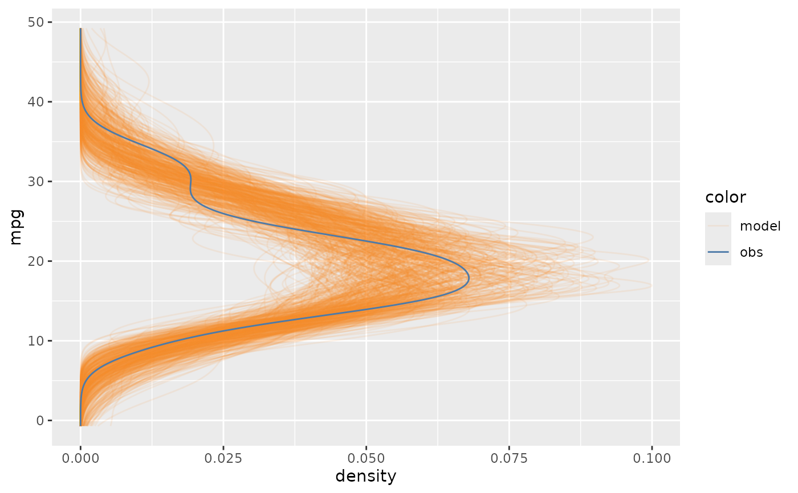
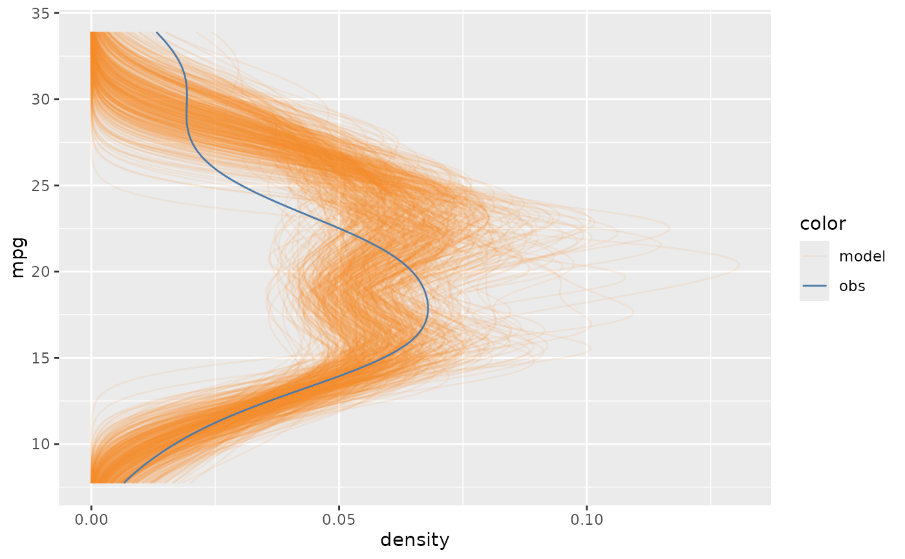
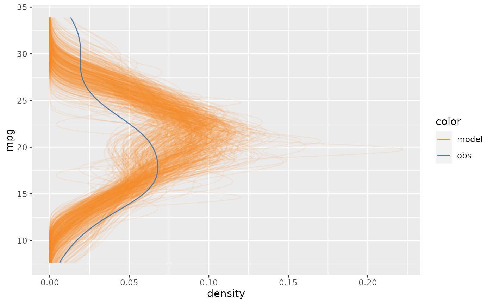
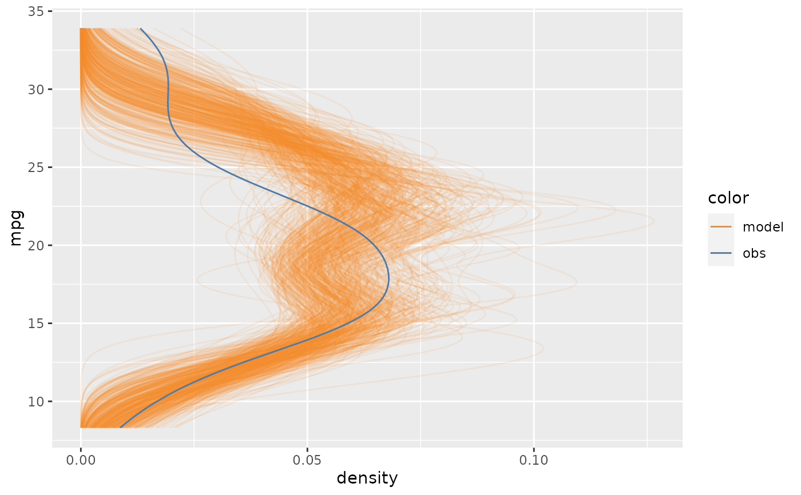

mc_distribution.Rdmodelcheck uses the R package tidybayes
to draw from posterior distributions. For posterior predictive distributions,
modelcheck uses tidybayes::predicted_draws(); for posterior distribution
of push-forward transformation, modelcheck uses tidybayes::linpred_draws().
mc_distribution(
distribution = "prediction",
newdata = NULL,
extract_function = NULL,
response_var = NULL,
ndraws = 500,
...
)Which distribution to draw from. The options include "prediction" and
and push-forward transformations (e.g. mu, sigma, and phi). For example,
if the model is normal family and distribution = "prediction", we draws from
posterior predictive distribution; if distribution = "mu", we draws from
the distribution of linear/link-level predictor (i.e. push-forward transformations).
Data frame to generate predictions from, or NULL to reuse the
data frame used to fit model, i.e. replicated predictive distribution.
The function used to draw from model's posterior distributions.
Default to be NULL. If extract_function is NULL, then modelcheck will
use tidybayes::predicted_draws() for distribution = "prediction" and
use tidybayes::linpred_draws() for other distributions of
linear/link-level predictors. If extract_function is not NULL, it should be
a function that takes model, newdata, and ndraws as inputs and output a data
frame that sampled from model on newdata with at least a prediction
column (the draws from the model's distribution), a .row column (a factor grouping rows from
the input newdata), and a .draw column (a unique index corresponding to
each draw from the distribution).
A string for the response variable in model. Default to
be NULL. If NULL, modelcheck will infer the response variable from
model$formula.
The number of draws to return, or NULL to return all draws.
Augments passed to extract_function. If extract_function is NULL,
then ... will be passed to tidybayes::predicted_draws() or tidybayes::linpred_draws()
library(tidybayes)
library(dplyr)
library(modelr)
mcplot(mpg_model) +
mc_distribution()

mcplot(mpg_model) +
mc_distribution("mu")

mcplot(mpg_model) +
mc_distribution("mu", data_grid(mpg_model$data, disp, vs, am))

epred_draws_mu = function(model, newdata, ...) {
epred_draws(model, newdata, dpar = "mu", ...) %>%
mutate(prediction = mu)
}
mcplot(mpg_model) +
mc_distribution(extract_function = epred_draws_mu)
